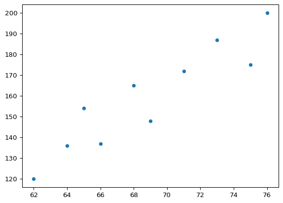
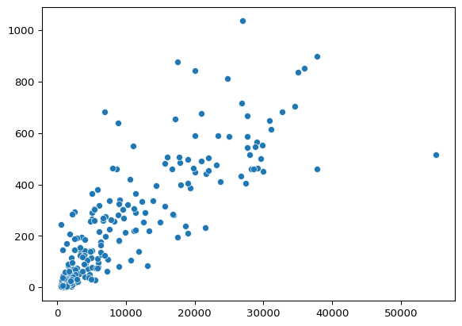

import seaborn as sns # Samuel Norman Seaborn (sns)
import matplotlib.pyplot as pltIntroducción a Seaborn
Qué es Seaborn y cuándo debes utilizarlo? En este capítulo, ¡Lo descubrirás! Además, aprenderás a crear gráficos de dispersión y de recuento tanto con listas de datos como con DataFrames de pandas. También conocerás una de las grandes ventajas de utilizar Seaborn: la posibilidad de añadir fácilmente una tercera varible a tus gráficos utilizando el color para representar diferentes subgrupos.
Introducción a Seaborn
- Qué es Seaborn?
- Puthon es una librería de visualización de datos
- Crea facilmente los tipos más comunes de gráficos
- Por qué es útil Seaborn?
- Exploración de datos
- Comunicación de resultados
- Ventajas de Seaborn
- Fácil de usar
- Trabaja bien con estructuras de datos de
pandas - Construído sobre
matplotlib
- Cómo iniciar?
- Ejemplo 1: Scatter plot
import seaborn as sns
import matplotlib.pyplot as plt
height = [62, 64, 69, 75, 66,
68, 65, 71, 76, 73]
weight = [120, 136, 148, 175, 137,
165, 154, 172, 200, 187]
sns.scatterplot(x=height, y=weight)
plt.show()
- Ejemplo 2: Crear un count plot
import seaborn as sns
import matplotlib.pyplot as plt
gender = ['Female', 'Female',
'Female', 'Female',
'Male', 'Male', 'Male',
'Male', 'Male', 'Male']
sns.countplot(x=gender)
Hacer un gráfico de dispersión con listas
En este ejecicio, utilizaremos un conjunto de datos que contiene información sobre 227 países. Este conjunto de datos contiene mucha información interesante sobre cada país, como sus tasas de natalidad y mortalidad y su producto interno bruto (GDP). GDP es el valor de todos los bienes y servicios producidas en un año, expresado en dólares por persona.
Hemos creado tres listas de datos a partir de este conjunto de datos para que puedas empezar. gdp es una lista que contiene el valor de GDP por país, expresado en dólares por persona. phones es una lista con el número de teléfonos móviles por cada 1000 personas en este país. Por último percent_literate es una lista que contiene el porcentaje de la población de cada país que sabe leer y escribir.
import pandas as pd
ruta = './data/countries-of-the-world.csv'
df = pd.read_csv(ruta)
df.head()| Country | Region | Population | Area (sq. mi.) | Pop. Density (per sq. mi.) | Coastline (coast/area ratio) | Net migration | Infant mortality (per 1000 births) | GDP ($ per capita) | Literacy (%) | Phones (per 1000) | Arable (%) | Crops (%) | Other (%) | Climate | Birthrate | Deathrate | Agriculture | Industry | Service | |
|---|---|---|---|---|---|---|---|---|---|---|---|---|---|---|---|---|---|---|---|---|
| 0 | Afghanistan | ASIA (EX. NEAR EAST) | 31056997 | 647500 | 48,0 | 0,00 | 23,06 | 163,07 | 700.0 | 36,0 | 3,2 | 12,13 | 0,22 | 87,65 | 1 | 46,6 | 20,34 | 0,38 | 0,24 | 0,38 |
| 1 | Albania | EASTERN EUROPE | 3581655 | 28748 | 124,6 | 1,26 | -4,93 | 21,52 | 4500.0 | 86,5 | 71,2 | 21,09 | 4,42 | 74,49 | 3 | 15,11 | 5,22 | 0,232 | 0,188 | 0,579 |
| 2 | Algeria | NORTHERN AFRICA | 32930091 | 2381740 | 13,8 | 0,04 | -0,39 | 31 | 6000.0 | 70,0 | 78,1 | 3,22 | 0,25 | 96,53 | 1 | 17,14 | 4,61 | 0,101 | 0,6 | 0,298 |
| 3 | American Samoa | OCEANIA | 57794 | 199 | 290,4 | 58,29 | -20,71 | 9,27 | 8000.0 | 97,0 | 259,5 | 10 | 15 | 75 | 2 | 22,46 | 3,27 | NaN | NaN | NaN |
| 4 | Andorra | WESTERN EUROPE | 71201 | 468 | 152,1 | 0,00 | 6,6 | 4,05 | 19000.0 | 100,0 | 497,2 | 2,22 | 0 | 97,78 | 3 | 8,71 | 6,25 | NaN | NaN | NaN |
# Convertir a numerico los datos tipo object
df['Phones (per 1000)'] = df['Phones (per 1000)'].str.replace(',', '.').astype(float)
df['Literacy (%)'] = df['Literacy (%)'].str.replace(',', '.').astype(float)
# Crear las listas
gdp = df['GDP ($ per capita)'].tolist()
phones = df['Phones (per 1000)'].tolist()
percent_literate = df['Literacy (%)'].tolist()Instrucciones
- Importa Matplotlib y Seaborn utilizando la convención de nomenclatura estándar.
# Import Matplotlib and Seaborn
import matplotlib.pyplot as plt
import seaborn as sns- Crea un gráfico de dispersión de GDP (
gdp) frente al número de teléfonos por cada 1000 personas (phones).
# Create scatterplot with GDP on x-axis and number of phones on the y-axis
sns.scatterplot(x=gdp, y=phones)
plt.show()
- Combina el diagrama de dispersión para que muestre el porcentaje de la población que sabe leer y escribir (
percent_literate) en el eje y.
sns.scatterplot(x=gdp, y=percent_literate)
plt.show()
Aunque este gráfico no muestra una relación lineal entre el PIB y el porcentaje de alfabetización, los países con un PIB más bajo parecen tener más probabilidades de tener un porcentaje menor de la población que puede leer y escribir.
Hacer un gráfico de recuento con una lista
En el ejercicio anterior, exploramos un conjunto de datos que contienen información sobre 227 países. Exploremos más a fondo estos dato: concretamente, ¿cuántos países hay en cada región del mundo?
Para ello, tendremos que utilizar un gráfico de recuento. Los gráficos de recuento toman una lista categórica y devuelven barras que representan el número de entradas de la lista por categoría. Puedes crear una aquí utilizando una lista de regiones para cada país, que es uva variable llamada region.
# Se convierte la columna Region en lista y se quitan los espacios
region = df['Region'].tolist()
region = [item.strip() for item in region]Instrucciones
- Importa Matplotlib y Seaborn utilizando las convenciones de nomenclatura estándar.
- Utiliza Seaborn para crear un gráfico de recuento con
regionen el eje y. - Visualiza el gráfico
# Import Matplotlib and Seaborn
import matplotlib.pyplot as plt
import seaborn as sns
# Create count plot with region on the y-axis
sns.countplot(y=region)
# Show plot
plt.show()
África Subsahariana contiene la mayoría de los países en esta lista.
Utilizar pandas con Seaborn
- Qué es Pandas?
- Librería de Python para análisis de datos.
- Puede leer conjunto de datos de múltiples tipos de archivos. Por ejemplo csv, txt.
- El conjunto de datos toma la forma de objeto
DataFrame.
- Trabajando con DataFrames
import pandas as pd
df = pd.read_csv('masculinity.csv')
df.head()- Usando DataFrames con countplot()
import pandas as pd
import matplotlib.pyplot as plt
import seaborn as sns
df = pd.read_csv('masculinity.csv')
sns.countplot(x='how_masucline', data=df)
plt.show()Datos “ordenados” frente a datos “desordenados”
Aquí tenemos un conjunto de datos que muestra de una encuesta a niños sobre sus animales favoritos. Pros, ¿Podemos utilizar este conjunto de datos tal cual con Seaborn? Vamos a utilizar pandas para importar el archivo csv con los datos recogidos en la encuestra y determinar si está ordenado, lo cual es esencial para que funcione bien con Seaborn.
Para empezar, se ha asignado la tura del archivo csv a la variable csv_filepath.
Instrucciones
- Lee el archivo csv situado en
csv_filepathen un DataFrame llamadodf. - Imprime la cabecera de
dfpara mostrar las cinco primeras filas.
csv_filepath = './data/1.2.1_example_csv.csv'# Import pandas
import pandas as pd
# Create a DataFrame from csv file
df = pd.read_csv(csv_filepath)
# Print the head of df
print(df.head()) Unnamed: 0 How old are you?
0 Marion 12
1 Elroy 16
2 NaN What is your favorite animal?
3 Marion dog
4 Elroy cat- Pregunta
Visualiza las cinco primeras filas del DataFrame df. ¿Está ordenado? ¿Por qué si o por qué no?
Respuestas posibles
Hacer un gráfico de recuento con un DataFrame
En este ejercicio examinaremos las respuestas a una encuesta enviada a los jóvenes. Nuestra pregunta principal aquí es: ¿cuántos jóvenes encuestados afirman tener miedo a las arañas? Se pidió a los participantes en la encuesta que estuvieran de acuerdo o en desacuerdo con la afirmación “Tengo miedo a las arañas”. Las respuestas varían de 1 a 5, donde 1 es “Totalmente en desacuerdo” y 5 es “Totalmente de acuerdo”.
Para empezar, la ruta del archivo csv con los datos de la encuesta se ha asignado a la variable csv_filepath.
Instrucciones
- Importa Matplotlib, pandas y Seaborn utilizando los nombres estándar.
- Crea un DataFrame llamado
dfa partir del archivo csv situado encsv_filepath. - Utilizando la función
countplot()con los argumentosx=ydata=para crear un gráfico de recuento con los valores de la columna"Spiders"en el eje x. - Visualiza el gráfico.
csv_filepath = './data/young-people-survey-responses.csv'# Import Matplotlib, pandas and Seaborn
import pandas as pd
import matplotlib.pyplot as plt
import seaborn as sns
# Create a DataFrame from csv file
df = pd.read_csv(csv_filepath)
# Create a countplot with "Spiders" on the x-axis
sns.countplot(x='Spiders', data=df)
# Display the plot
plt.show()
Este gráfico nos muestra que la gran mayoría de los jóvenes informaron no tener miedo a las arañas.
Añadir una tercera variable con el tono
Para probarlos usaremos el siguiente Dataset:
- Dataset Tips
import pandas as pd
import seaborn as sns
tips = pd.read_csv('./data/tips.csv')
tips.head()| total_bill | tip | sex | smoker | day | time | size | |
|---|---|---|---|---|---|---|---|
| 0 | 16.99 | 1.01 | Female | No | Sun | Dinner | 2 |
| 1 | 10.34 | 1.66 | Male | No | Sun | Dinner | 3 |
| 2 | 21.01 | 3.50 | Male | No | Sun | Dinner | 3 |
| 3 | 23.68 | 3.31 | Male | No | Sun | Dinner | 2 |
| 4 | 24.59 | 3.61 | Female | No | Sun | Dinner | 4 |
- Un Scatter plot básico
import matplotlib.pyplot as plt
import seaborn as sns
sns.scatterplot(x='total_bill',
y='tip',
data=tips)
plt.show()
- Un Scatter plot con hue
import matplotlib.pyplot as plt
import seaborn as sns
sns.scatterplot(x='total_bill',
y='tip',
data=tips,
hue='smoker')
plt.show()
- Configurando el orden del hue
import matplotlib.pyplot as plt
import seaborn as sns
sns.scatterplot(x='total_bill',
y='tip',
data=tips,
hue='smoker',
hue_order=['Yes',
'No'])
plt.show()
- Especificando los colores de hue
import matplotlib.pyplot as plt
import seaborn as sns
hue_colors = {'Yes': 'black',
'No': 'red'}
sns.scatterplot(x='total_bill',
y='tip',
data=tips,
hue='smoker',
palette=hue_colors)
plt.show()
- Usando hue con count plots
import matplotlib.pyplot as plt
import seaborn as sns
sns.countplot(x='smoker',
data=tips,
hue='sex')
plt.show()
Gráficos de tono y dispersión
En el video anterior aprendimos como hue nos permite hacer fácilmente subgrupos dentro de los gráficos de Seaborn. Vamos a probarlo explorando los datos de los alumnos de secundaria. Tenemos mucha información sobre cada alumno, como su edad, dónde vive, sus hábitos de estudio y sus actividades extraescolares.
Por ahora, nos fijaremos en la relación entgre el número de faltas que tienen en la escuela y su calificación final en el curso, segmentada por el lugar donde vive el alumno (zona rural frente a zona urbana).
student_data = pd.read_csv('./data/student-alcohol-consumption.csv', index_col=0)
student_data.head()| school | sex | age | famsize | Pstatus | Medu | Fedu | traveltime | failures | schoolsup | ... | goout | Dalc | Walc | health | absences | G1 | G2 | G3 | location | study_time | |
|---|---|---|---|---|---|---|---|---|---|---|---|---|---|---|---|---|---|---|---|---|---|
| 0 | GP | F | 18 | GT3 | A | 4 | 4 | 2 | 0 | yes | ... | 4 | 1 | 1 | 3 | 6 | 5 | 6 | 6 | Urban | 2 to 5 hours |
| 1 | GP | F | 17 | GT3 | T | 1 | 1 | 1 | 0 | no | ... | 3 | 1 | 1 | 3 | 4 | 5 | 5 | 6 | Urban | 2 to 5 hours |
| 2 | GP | F | 15 | LE3 | T | 1 | 1 | 1 | 3 | yes | ... | 2 | 2 | 3 | 3 | 10 | 7 | 8 | 10 | Urban | 2 to 5 hours |
| 3 | GP | F | 15 | GT3 | T | 4 | 2 | 1 | 0 | no | ... | 2 | 1 | 1 | 5 | 2 | 15 | 14 | 15 | Urban | 5 to 10 hours |
| 4 | GP | F | 16 | GT3 | T | 3 | 3 | 1 | 0 | no | ... | 2 | 1 | 2 | 5 | 4 | 6 | 10 | 10 | Urban | 2 to 5 hours |
5 rows × 29 columns
Instrucciones
- Crea un gráfico de dispersión con
absenscesen el eje x y la calificación final ("G3") en el eje y utilizando el DataFramestudent_data. Colorea los puntos del gráfico en función de"location"(urbano vs. rural)
# Import Matplotlib and Seaborn
import matplotlib.pyplot as plt
import seaborn as sns
# Create a scatter plot of absences vs. final grade
sns.scatterplot(x='absences',
y='G3',
data=student_data,
hue='location')
# Show plot
plt.show()
- Haz que
ruralaparezca antes queurbanen la leyenda del gráfico.
# Import Matplotlib and Seaborn
import matplotlib.pyplot as plt
import seaborn as sns
# Change the legend order in the scatter plot
sns.scatterplot(x='absences',
y='G3',
data=student_data,
hue='location',
hue_order=['Rural', 'Urban'])
# Show plot
plt.show()
Los estudiantes con más ausencias tienden a tener calificaciones más bajas tanto en áreas rurales como urbanas.
Gráficos de tono y recuento
Sigamos explorando nuestro conjunto de datos de alumnos de secundaria examinando una nueva variable. La columna school indica las iniciales de la escuela a la que asistió al alumno: “GP” o “MS”.
En el último ejercicio, creamos un gráfico de dispersión en el que los puntos del gráfico se coloreaban en función de si el alumno vivía en zona urbana o rural. ¿Cuántos alumnos viven en zonas urbanas frente a zonas rurales, y varía esto en función de la escuela a la que asiste el alumno? Hagamos un gráfico de recuento con subgrupos para averiguarlo.
Instrucciones
Rellena el diccionario
palette_colorspara asignar el valor de ubicación"Rural"al color"green"y el valor de ubicación"Urban"al color"blue".Crea un gráfico de recuento con
"school"en el eje x utilizando el DataFramestudent_data.- Añade subgrupos al gráfico, utilizando la variable
"location"`` y utliliza el diccionariopalette_colors` para que los subgrupos de ubicación sean verdes o azules.
- Añade subgrupos al gráfico, utilizando la variable
# Import Matplotlib and Seaborn
import matplotlib.pyplot as plt
import seaborn as sns
# Create a dictionary mapping subgroup values to colors
palette_colors = {'Rural': 'green',
'Urban': 'blue'}
# Create a count plot of school with location subgroups
sns.countplot(x='school',
data=student_data,
hue='location',
palette=palette_colors)
# Display plot
plt.show()
Los estudiantes en GP tienden a venir de una ubicación urbana, pero los estudiantes en MS están más equitativamente divididos.